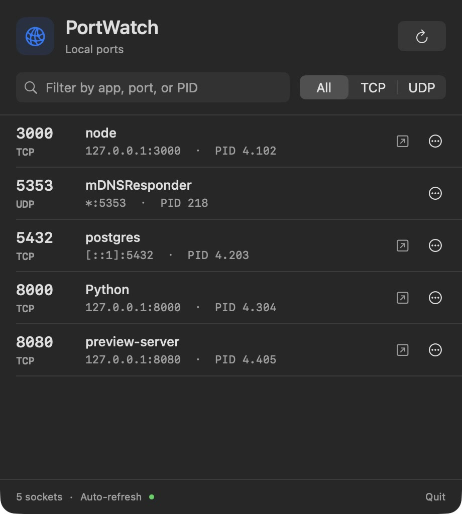

BUILDING IN PUBLIC · NOTES
PortWatch puts local ports in the Mac menu bar
I built a macOS utility that shows which process owns a local port and opens development servers from the menu bar.
A dev server says port 3000 is already in use. Before I choose another port, I want to know what’s running there. Maybe it’s the server I started in another terminal tab, and I can open it right away. That’s the situation I built PortWatch for.

From a port number to a process
Click the network icon in the menu bar and PortWatch lists the TCP listeners and bound UDP sockets visible to your macOS account. Each row shows the process, endpoint and PID. Search by app name, port or PID, or use the TCP and UDP filters. The list refreshes every three seconds while the panel is open.
If the row points to a web server, the arrow opens its HTTP address in the browser. The row menu also offers HTTPS and lets you copy the address. A TCP socket can belong to a database or another service too, so the shortcut is most useful when you already know you’re looking for a web preview.
Stopping the process behind the port
When I’m done with a stale server, I can ask PortWatch to stop a process I own. A confirmation names the process and makes clear that the action affects every socket it owns. Relaunchable Mac apps get a restart action. For a server launched from a terminal, I use the original command to bring it back.
The app uses SwiftUI for the panel and macOS’s bundled lsof to look up sockets. Before sending a termination request it checks that the process is still the one it found during the scan. I wanted the menu-bar version of the port lookup I kept doing in Terminal, with enough context to decide what to do next.